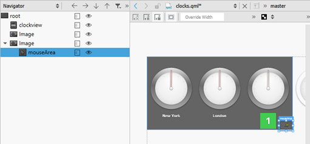
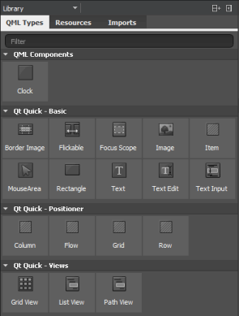
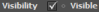
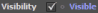

Using Qt Quick Designer
You can edit Qt Quick UI Forms (ui.qml files) in Qt Quick Designer. Qt Creator opens the UI forms in the Form Editor tab in the Design mode. It is recommended that you use UI forms for components that you want to design in Qt Quick Designer.
Use Qt Quick Designer to manage your project:
- Canvas (1) is the working area where you create QML components and design applications. In the Form Editor tab, you can use a visual editor to design UIs, and in the Text Editor tab, you can use a code editor to edit the QML code generated by the visual editor.
- Use the sidebars to select QML types to use in the project, to specify properties for them, and to view them in a tree structure, as well as to create connections and browse projects and files. You can select the content of the sidebars in the sidebar menu:
- Library (2) displays the building blocks that you can use to design applications: predefined QML types, your own QML components, or Qt Quick Controls 2 that you import to the project, and other resources.
- Navigator (3) displays the items in the current QML file as a tree structure.
- Properties (4) organizes the properties of the selected item. You can change the properties also in the Text Editor.
- Connections (5) enables you to create connections between objects, signals, and object properties. For more information, see Adding Connections.
- File System shows all files in the currently selected directory. For more information, see Viewing the File System.
- Open Documents shows currently open files.
- Projects shows a list of projects open in the current session. For more information, see Viewing Project Files.
- State pane (6) displays the different states of the item. QML states typically describe user interface configurations, such as the UI controls, their properties and behavior and the available actions.
Managing Item Hierarchy
The Navigator displays the items in the current QML file and their relationships. Items (1) are listed in a tree structure, below their parent (2).
You can select items in the Navigator to edit their properties in the Properties pane. Items can access the properties of their parent item. To select items on the canvas, right-click an item, and select another type in the context menu.
Typically, child items are located within the parent item on the canvas. However, they do not necessarily have to fit inside the parent item. For example, you might want to make a mouse area larger than the rectangle or image beneath it (1).

When you copy an item, all its child items are also copied. When you remove an item, the child items are also removed.
You can show and hide items on the canvas to focus on specific parts of the application. Click the (Transparent) button to change the visibility of an item on the canvas. To change the visibility of an item in the application, select the Visibility check box in the Properties pane or select Edit > Visibility in the context menu.
You can also set the Opacity field to 0 to hide items that you want to apply animation to.
As all properties, visibility and opacity are inherited from the parent item. To hide or show child items, edit the properties of the parent item.
To hide invisible items in the navigator, click (Filter Tree) and select Show only visible items.
To reset item size, position, or anchors, select context menu commands. To change the source of an Image type, select Change Source URL in the context menu.
To view lists of files or projects, instead, select File System, Open Documents, or Projects in the menu. To view several types of content at a time, split the sidebars by clicking the  (Split) button.
(Split) button.
Setting the Stacking Order
The z property of an Item determines its position in relation to its sibling items in the type hierarchy. By default, items with a higher stacking value are drawn on top of siblings with a lower stacking value. Items with the same stacking value are drawn in the order they are listed, from the last item up.
To raise or lower the stack value of an item, select (Raise) or  (Lower) on the toolbar.
(Lower) on the toolbar.
To move an item to the front or back of all its siblings, right-click it in the navigator or the Form Editor and select Stack (z). To remove the z property, select Reset z Property.
You can also use a StackLayout item (Qt Quick Controls 2) to create a stacked view. For more information, see Using Layouts.
Switching Parent Items
When you drag and drop instances of QML types to the canvas, Qt Quick Designer adds the new item as a child of the item beneath it. When you move items on the canvas, Qt Quick Designer cannot determine whether you want to adjust their position or attach them to a new parent item. Therefore, the parent item is not automatically changed. To change the parent of the item, press down the Shift key before you drag and drop the item into a new position. The topmost item under the cursor becomes the new parent of the item.
You can change the parent of an item also in the Navigator. Drag and drop the item to another position in the tree or use the arrow buttons (1) to move the item in the tree.
QML Type Library
The Library enables you to select QML types, UI components, and resources, as well as to manage imports.
QML Types displays the QML types grouped by category: your own QML components, basic types, layouts, positioner types, and views.
Sets of UI components with the look and feel of a particular mobile device platform have been defined for Qt Quick 1. Since Qt 5.1, ready-made Qt Quick Controls, Dialogs, and Layouts are available for creating user interfaces using Qt Quick 2.1. The components and controls are based on standard QML types. To view the components and controls in the Library, import the component sets in Imports.
The Qt Quick Application wizards for a particular platform add the import statements automatically. You can remove import statements in Imports

Resources displays the images and other files that you copy to the project folder (to the same subfolder as the QML files).
Specifying Item Properties
The Properties pane displays all the properties of the selected item. The properties are grouped by type. The top part of the pane displays properties that are common to all QML types, such as position, size, and visibility.
The bottom part of the pane displays properties that are specific to each QML type. For example, the following image displays the properties you can set for Rectangle (1) and Text (2) items.
To change the item type, double-click the Type field in the Properties pane, and enter the name of another QML type in the field. If you have specified properties for the item that are not supported for the new type, the type cannot be changed and an error message is displayed. Remove the properties in the Text Editor and try again.
To return an item to its implicit position after moving it, select the (Reset Position) button on the toolbar. To return it to its implicit size, select (Reset Size) button.
To set the visibility of the item, select Edit > Visibility in the context menu.
To specify the color of the selected item in the Select Color dialog, select Edit Color in the context menu.
For more information on the properties available for an item, press F1.
Viewing Changes in Properties
The default values of properties are displayed in white color, while the values that you specify explicitly are highlighted with blue color. In addition, property changes in states are highlighted with blue.
This allows you to easily see which values are set in the UI form or QML file and which values are default characteristics of a QML type or a component.
When editing states, you can easily see which values are explicitly set in the current state and which values are derived from the base state.
The following images illustrate this. In the base state, the Size (1) and Colors (2) values are explicitly set and highlighted.

In State1, only the color (1) is explicitly set and highlighted.
Resetting a property sets it back to the default value and removes the value from the UI form or QML file.
Note: As a result, all boolean values can be visualized in four different ways.
For example, visibility can be visualized as follows:
 | TRUE | The QML type is visible by default. The visibility might be overridden by the visibility set in the base state. |
 | TRUE (highlighted) | The QML type is explicitly set to visible. |
| FALSE | The QML type is hidden by default. The visibility might be overridden by the visibility set in the base state. | |
| FALSE (hightlighted) | The type is explicitly set to hidden. |

Marking Text Items for Translation
To support translators, mark each text item that should be translated. In the Properties pane, Text field, select tr (1).
By default, the text string is enclosed in a qsTr() call.

If you use text IDs instead of plain text, change the default call to qsTrId(). Select Tools > Options > Qt Quick > Qt Quick Designer, and then select the qsTrId() radio button in the Internationalization group. For more information about text ID based translations, see Qt Linguist Manual: Text ID Based Translations.
To preserve the context when editing the text or to change the context by setting a binding on the text property, change the default call to qsTranslate() by selecting the qsTranslate() radio button.
For more information, see Internationalization and Localization with Qt Quick.
Loading Placeholder Data
Qt Quick Designer supports views, models, and delegates, so that when you add a Grid View, List View, or Path View item, the ListModel and the delegate item are added automatically.
However, the missing context of the application presents a challenge for Qt Quick Designer. Specific models defined in C++ are the most obvious case. Often, the context is missing simple properties, which are either defined in C++, or in other QML files. A typical example is an item that uses the properties of its parent, such as parent.width.
Using Dummy Models
If you open a file in Qt Quick Designer that references a C++ model, you see nothing on the canvas. If the data in the model is fetched from the internet, you have no control over it. To get reliable data, dummy data was introduced.
For example, the following code snippet describes the file example.qml that contains a ListView that in turn specifies a C++ model:
ListView { model: dataModel delegate: ContactDelegate { name: name } }
Create a directory named dummydata in the root directory of the project, so that it is not deployed to the device. In the dummydata directory, create a QML file that has the same name as the value of model:
qml/exampleapp/example.qml dummydata/dataModel.qml
Then create the dataModel.qml file that contains the dummy data:
import QtQuick 1.0 ListModel { ListElement { name: "Ariane" } ListElement { name: "Bella" } ListElement { name: "Corinna" } }
Creating Dummy Context
The following example presents a common pattern in QML:
Item { width: parent.width height: parent.height }
This works nicely for applications but Qt Quick Designer displays a zero-sized item. A parent for the opened file does not exist, because the context is missing. To get around the missing context, the idea of a dummy context is introduced. If you place a file with the same name as the application (here, example.qml) in the dummydata/context directory, you can fake a parent context:
import QtQuick 1.0 import QmlDesigner 1.0 DummyContextObject { parent: Item { width: 640 height: 300 } }
Building Transformations on Items
The Advanced pane allows you to configure advanced transformations, such as rotation, scale, and translation. You can assign any number of transformations to an item. Each transformation is applied in order, one at a time.
For more information on Transform types, see Transform.
Editing Properties Inline
You can double-click objects on the canvas to edit their text, color, or source properties inline. Because you can specify several of these properties for some QML types, such as Text Edit, you can also right-click objects to open the inline editors from a context-menu.
Adding States
User interfaces are designed to present different interface configurations in different scenarios, or to modify their appearances in response to user interaction. Often, there are a set of changes that are made concurrently, such that the interface could be seen to be internally changing from one state to another.
This applies generally to interfaces regardless of their complexity. A photo viewer may initially present images in a grid, and when an image is clicked, change to a detailed state where the individual image is expanded and the interface is changed to present new options for image editing. On the other end of the scale, when a simple button is pressed, it may change to a pressed state in which its color and position is modified to give a pressed appearance.
In QML, any item can change between different states to apply sets of changes that modify the properties of relevant items. Each state can present a different configuration that can, for example:
- Show some UI items and hide others.
- Present different available actions to the user.
- Start, stop or pause animations.
- Execute some script required in the new state.
- Change a property value for a particular item.
- Show a different view or screen.
The State pane displays the different states of the component in the Qt Quick Designer. The State pane is collapsed by default to save space. Select Expand in the context menu to view the whole pane.
To add states, click the  button. Then modify the new state in the editor. For example, to change the appearance of a button, you can hide the button image and show another image in its place. Or, to add movement to the screen, you can change the position of an object on the canvas and then add animation to the change between the states.
button. Then modify the new state in the editor. For example, to change the appearance of a button, you can hide the button image and show another image in its place. Or, to add movement to the screen, you can change the position of an object on the canvas and then add animation to the change between the states.
To determine when the state should be applied, select Set when Condition in the menu and specify a when property for the state.
You can preview the states in the State pane and click them to switch between states on the canvas.
For more information on using states, see Creating Screens.
If you add animation to the states, you can run the application to test the animation.
For more information on adding animation, see Animating Screens.
Working with QML Types on Canvas
You design applications on the canvas by placing items on it.
Snapping to Parent and Sibling Items
When you are working on a design, you can use snapping to align items on the canvas. Click the button to have the items snap to their parent or sibling items. Snapping lines automatically appear to help you position the items. Click the button to anchor the item to the items that you snap to.
Choose Tools > Options > Qt Quick > Qt Quick Designer to specify settings for snapping. In the Parent item padding field, specify the distance in pixels between the parent item and the snapping lines. In the Sibling item spacing field, specify the distance in pixels between sibling items and the snapping lines.
The following image shows the snapping lines when Parent item padding is set to 5 pixels.
Hiding Item Boundaries
Qt Quick Designer displays the boundaries of items on the canvas. To hide the boundaries, click the button.
Selecting Items
When you point the mouse to overlapping items, the frontmost item is selected by default. However, items that do not have any content, such as the mouse area, are typically located in front of items that do have content, such as rectangles or border images. To select items with content by default, click the button.
Previewing Component Size
The width and height of the root item in a QML file determine the size of the component. You can reuse components, such as buttons, in different sizes in other QML files and design screens for use with different device profiles, screen resolution, or screen orientation. The component size might also be zero (0,0) if its final size is determined by property bindings.
To experiment with different component sizes, enter values in the Override Width and Override Height fields (1) on the canvas toolbar. The changes are displayed in the State pane (2) and on the canvas (3), but the property values are not changed permanently in the QML file. You can permanently change the property values in the Properties pane (4).
Specifying Canvas Size
To change the canvas size, select Tools > Options > Qt Quick > Qt Quick Designer and specify the canvas width and height in the Canvas group.
Refreshing the Canvas
When you open QML files in Qt Quick Designer, the items in the file are drawn on the canvas. When you edit the item properties in Qt Quick Designer, the QML file and the image on the canvas might get out of sync. For example, when you change the position of an item within a column or a row, the new position might not be displayed correctly on the canvas.
To refresh the image on the canvas, press R or select the (Reset View) button.